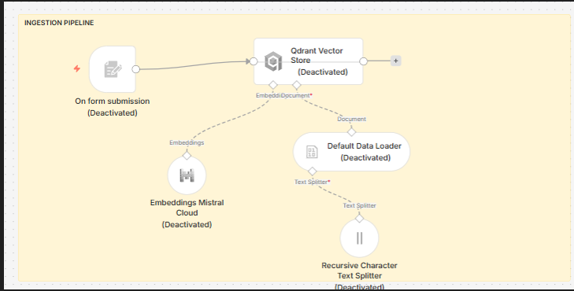
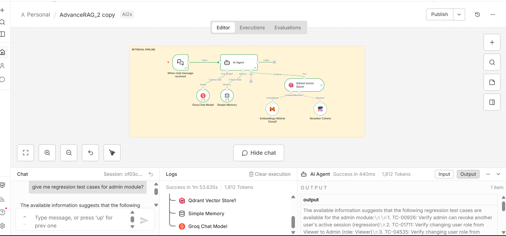

Document ingestion and AI chat with vector search and Cohere re-ranking
Upload a file via the form trigger → chunks are embedded (Mistral) and stored in Qdrant. Ask questions in chat → the AI agent retrieves context, re-ranks with Cohere, and answers with Groq.


Import AdvanceRAG.json into your n8n instance and connect API credentials.